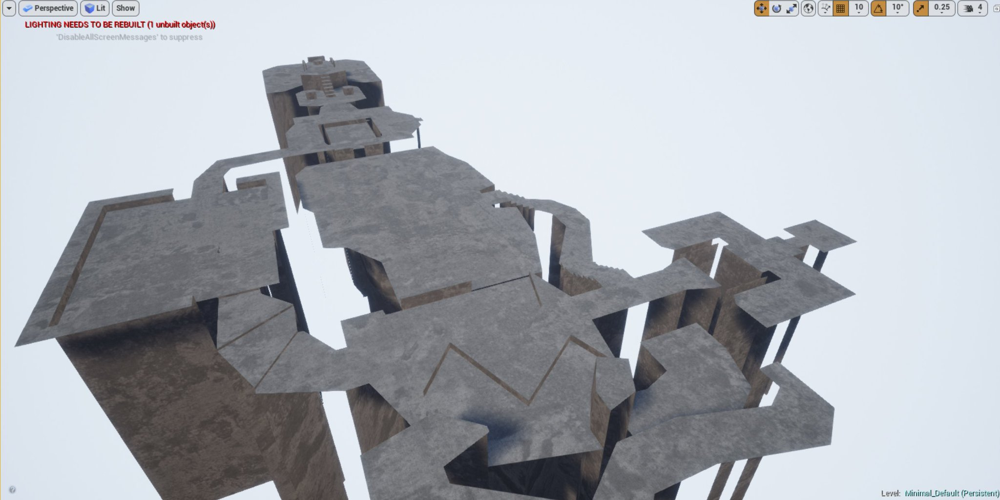
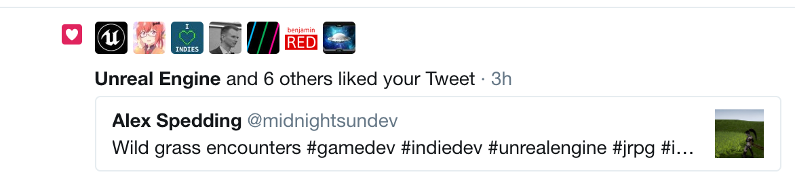

Main Portfolio
On this page are projects which I have done in my spare time and since I have designed them from scratch so they are the ones I am most proud of. They are in chronological order from most recent to oldest.
KumaEngine Current Project
This is a project to combine both a compiler and a game engine in OpenGL. The aim is to allow people to create visual novels similar to the Danganronpa series (which involve both 2D and 3D environments and minigames making it more complex than a standard visual novel).
Source CodeDoom WAD Importer
Import Doom (original) levels into Unreal Engine. Not written much yet... Imports floors and walls and doors so far.
Facade
A prototype of a turn-based RPG similar to Persona, Pokemon or Final Fantasy. This project started off by me wondering how to implement a turn-based RPG/overworld state system in engines such as Unreal Engine or Unity (see blogposts here and here with my rambling).
Liked by Unreal Engine Twitter account!

99th Street Released on itch.io
A prototype of a skating engine, with grinding, wallrides and a lack of skating animations. Made in Unreal Engine 4. Grinding uses splines and the game is fairly fun to play with a controller.
Expand itch.ioUntitled Stealth Game On hold
Stealth FPS game intended to be in the same style as the original Thief games. Written in UE4, I was quite proud of implementing noise arrows. The player can fire a noise arrow at any part of the map and it emits a noise, if the enemy is close enough then they will walk towards it. The extremely difficult part was integrating the noise sound with the navigation mesh (the predefined area of the both the AIs can walk on). Since most of the time the arrow will be shot at a wall or a roof of a building where the NPC cannot reach, thus the position the AI would need to investigate would need to be projected to the nearest point on its navigation mesh. It was way harder to implement than explain! And also researching OpenGL and the UE4 source code to work out the lighting algorithm UE uses to compute the amount of light hitting the player (because you need to be able to hide in the shadows!)
ExpandRed Leaf Released on Google Play Store and itch.io
Although lacking music talent (it's the wrong side of the brain for me) I have loved music for as far as I can remember. After getting an Android phone I found myself getting addicted to the rhythm games similar to Guitar Hero where you tap the notes as they fall down the screen. While I was doing some coursework for University which involved creating games for Android phones, I had the idea to create one of those rhythm games for one of my favourite bands, LOST. Obviously the first hurdle would be to get permission to use the music.
Expand Google Play Store itch.ioJet Set Reverse Released and Open Source
This was an application I developed to allow texture changes in the game Jet Set Radio HD. Jet Set Radio HD was a HD port of a Dreamcast game released in 1999, this means that all the files used by the HD re-release are Dreamcast files. As far as I know, I am the first person to develop support for texture changes on this game. It involved a lot of trial and error as the game uses its own custom file formats lacking a specification (or even any info about them), also the use of Dreamcast textures is annoying as many tools that still remain on the internet (being that the Dreamcast existed pre-millenium).
Expand Download Source CodeElectric Rain Open Source
Electric Rain was an RPG which I attempted to create using the Slick2D engine from Java. It has a turn based battle system in the vain of the Final Fantasy series, and supports types of attacks/spells such as ones which can have a single target and others which can have an area of effect and hit multiple targets. Attacks/spells don't neccessarily need to be targetted at enemies, healing spells are in place which can heal your own team. All of the data the game uses are stored in XML files and thus can be easily parsed and amended. The main game is reminescent of Pokemon - a top down view of the world with wild encounters found in grass.
ExpandNeuron Warfare Open Source
Neuron Warfare was an open source game creating in C++ using Irrlicht. Originally I intended the project just to be demo to see if I could implement the A* algorithm. However, it has quickly increased beyond that. It's beginning to form into a turn based strategy game where you have a party of players who move across a map and must kill the ememies before they kill you.
Expand Source CodeBarricade Released
Barricade was a simple puzzle game I made for a competition in 2009. The prize for the winner was that the game's graphics were remade (by David Gervais), and as a awful artist myself that would mean I could have a decent looking game if I won. I had drafted up some not so great looking prototypes. The gameplay was simplistic yet it worked - it involved navigated throughout a map to reach the end, however things were in your way such as boxes, locked 'doors' and spike pits. This game won the competition...
Expand DownloadJet Set Radio Air Lost in the sands of time ;_;
This was the first large scale project I attempted. It was a game based upon the games Jet Set Radio (1999) and Jet Set Radio Future (2002) (brilliant games which both have a large cult following). It was evident at the time that SEGA wouldn't continue with the franchise (understandable from a business point of view as the games just didn't sell, but not from a gamer point of view) so I thought it would be a good idea (bad idea - way too large a scale of a project) to make a fangame and in the process hopefully not receive a cease and desist letter from SEGA. I really enjoyed programming this, probably my proudest achievement, although looking back it isn't much but to a 15 year old me it was a masterpiece.
Expand